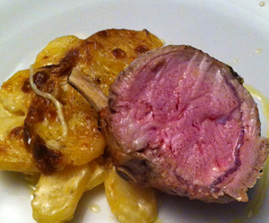

Kalbskarree
6 von 6Kalbskarree am Stück auf allen Seiten gut anbraten. Bei ca. 180 garen bis die Kerntemperatur 58 Grad erreicht. Herausnehmen und einige Minuten zugedeckt ruhen lassen, bis 62 Grad erreicht werden. Mit Kartoffelgratin servieren.
